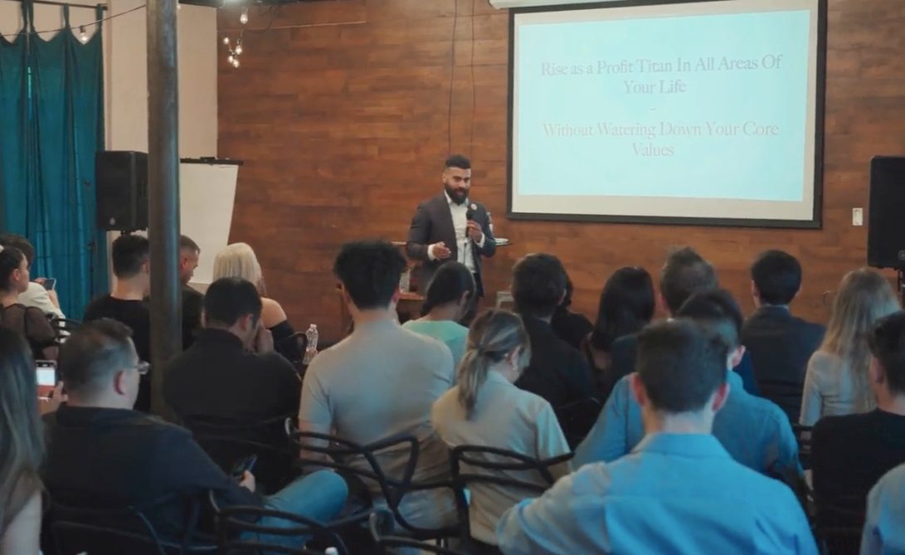

My story
I own and run companies in a few different fields. So I spend my days where you do, between where things are and where they should be. Some days the gap is in a business. Some days it's at home, in my health, or in my own head.
For years I studied people who had closed big gaps and wrote down what held up. I traced each idea back to where it came from, put it in plain words, and held it to one question: does this help close the gap?
Those notes became The Laws of Change. The complete book is open to members of The Research Group, because the same laws that grow a company also steady a home.
